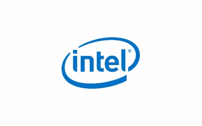
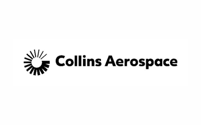

PESU has a great legacy in delivering education at the highest level of quality for almost five decades – in fields spanning from Engineering, Technology, Sciences, Medical Science, Law, Humanities, Design, and Arts. It also has a robust Doctoral research program. The M.Des program in Game and Entertainment Design will surely leverage the existing legacy and institutional capability to impart quality education. The infrastructure is superb, and the environment is conducive for the M.Des program as the B.Des programs are running smoothly.


Duration:
2 Years (4 Semesters)
Affiliation:
PES University
Campus:
Ring Road (RR) Campus
Admissions Test:
PES Entrance Process / CEED
Ranked #1
#1 University in Karnataka (New Universities under 5 years) by KSURF
PESU is NAAC A+ Accredited
PES University is accredited with A+ grade in NAAC, a national level accreditation body which is an autonomous institution under University Grants Commission (UGC)
Ranked #1
#1 B School in Karnataka – Times of India B School Rankings 2021
India's Most Preferred
PES is the second most preferred destination next to IIMB for B-School aspirants – Times of India
Get In Touch
Have questions about Master of Design (M.Des) admissions?
Share a few details and our admissions counsellors will walk you through eligibility, fees, scholarships and the application timeline — no obligation.
- Fast Response — a counsellor calls back within 24 hours.
- One-on-One Guidance — personalised help with eligibility and documentation.
- No Obligation — ask questions before you decide to apply.
Enquire Now
Fill this in and we'll reach out shortly.


Eligibility
50% marks in 10+2+3 or 10+2+4 or equivalent in any stream from a recognized board with English as a mandatory course. Test score in PES Entrance Test or CEED. For additional info, refer @ https://admissions.pes.edu
About the Programme
Master of Design (M.Des) @ PES University
The M.Des program at PES University is a two-year, full-time postgraduate program aimed at nurturing strategic thinkers, creative leaders, and technically skilled design professionals. The program offers three specializations that respond to the rapidly evolving landscape of design in India and globally. Students will engage in studio-based learning, interdisciplinary collaborations, and hands-on projects grounded in real-world contexts.
Specializations in M.Des at PES University
Game Design
- This specialization focuses on the design and development of interactive entertainment and serious games. Students will explore game mechanics, storytelling, user experience, and visual aesthetics, while gaining practical skills in prototyping and testing. The program prepares students to work in game development studios, ed-tech, and emerging fields like gamification and simulation design.
Interaction Design
- Interaction Design integrates digital technologies, human-centered design, and user experience to create intuitive and impactful digital products and services. Students will learn to conceptualize, prototype, and evaluate interfaces and systems across various platforms, including mobile, web, physical computing, and extended reality (XR).
Strategic Design Management
- This stream combines the disciplines of design, business strategy, and innovation management. Students will learn how to use design as a strategic tool to solve complex problems, build meaningful brands, and lead innovation within organizations. The focus will be on systems thinking, service design, and leadership in the creative economy.
About the Programme
Master of Design (M.Des) in Game and Entertainment Design (GED)

About the Program
This program focuses on the design and development of interactive entertainment and serious games. Students will learn game mechanics, storytelling, user experience, and visual aesthetics, while gaining practical skills in prototyping and testing. The program prepares students to work in game development studios, ed-tech companies, entertainment, and emerging fields like gamification and simulation design. The program will teach the conceptual, technical, creative, and studio-level skills to enable the students to excel in the game and entertainment industry as professionals later.
Students will learn to create games of different kinds/genres and interactive, fun-filled/entertaining experiences for the users/audience. Students will learn game UX/UI and game sound design. Game AI and game programming are also important components of this program. Students will get to know more about industry best practices and the market dynamics and trends. The program is associated/collaborates with a few known game industries in the country. The program will also focus on research and innovations in game design and the entertainment industry.
Why PES University
Key Differentiators of this Program at PESU:
The program is suitable for anyone who loves and is curious and enthusiastic about playing games, making games, and speaking and writing about games. Students from Design background, particularly from architecture, game design, graphic design, fine arts, economics, electronics and computer science, engineering, new-media, and communication design.
Is It For You?
Who Should &Pursue this Program:
Learning Approach
Program Design &and Delivery Method:
The program will be conducted in a semester framework/model with one semester designed for taught courses (modules), followed by a project-based semester in which students will conceive, plan, and execute a game design project. Mentorship and guidance for the projects/assignments will be provided by both in-house faculties and selected domain experts/professionals from industry and academia. The pedagogy is a mix of modular courses and elective-based courses.
The GED program at PESU is a rare M.Des program in game design. It is unique and one of its kind. It addresses the needs and requirements of the Indian game and entertainment industry. It also draws a lot from GOI’s initiatives to boost and modernize India’s game industry. NASSCOM and CII also promote higher education in game design.
About the Programme
Program Highlights:
Core Subjects
Focus Areas (Learning Outcomes)
01Knowledge in the field/domain of game design and entertainment
02To learn programming languages relevant for game design
03To learn simple animation to be used in game design
04Knowledge in 2D modeling, 3D modeling, rigging, and rendering
05How to manage a game design studio/company and game design start-up
06To know about innovations and entrepreneurship, relevant to the field of game
07To understand and learn about sound/music in video games
Financial Support
Merit scholarships, awarded on performance
Over ₹140 crores in merit scholarships have been given to PES University students since 2014.
Merit Scholarships
Awarded on CGPA / SGPAScholarship
50%
Prof. MRD Scholarships
Merit Certificate + 50% Tuition Fee Refund for Top 5% of the Students based on their CGPA.
Scholarship
40%
Prof. CNR Rao Scholarships
Merit Certificate + 40% Tuition Fee Refund for the next 20% of the Students based on their SGPA.
Scholarship
7.75+
Distinction Awards
Merit Certificate for Students securing 7.75+ SGPA.
PES Loyalty Program
Awarded on family / institutional ties, every year of studyLoyalty
30%
PES Employees
Children of full-time staff, 5+ years employment.
Loyalty
20%
PES Institution Students
Graduates of any PES institution or sister concern.
Loyalty
10%
Siblings of Students
Siblings of currently enrolled PES students.
Loyalty
10%
Alumni Family
Siblings and children of PES University alumni.
About the Programme
Skills :
- Students will develop knowledge of game documentary writing, project planning, and project management
- Skills in game programming and coding
- Basic art/sketching/illustration for sketching creative ideas and concepts
- Learn to design 2D games in Unity
- Understanding game engines and how networking games work
- Hands-on work on detailed design documentation and front-end interfaces
- Game art and level design
- Play-testing skills/principles
Curriculum
Infrastructure Support
- Immersive/Simulation Design Lab
- Physical Computing/Digital Fabrication Lab
- Ergonomics/Human Factors Lab
- Studio spaces for the three programs and more…
About the Programme
List of Subjects : (2-year program)
- Intro to Game Design
- Conventional Game Design (i.e., Card game, Board game, Chance game, etc.)
- Game Industry and Game Production Process
- Game Psychology
- Level Design/Mechanics Design I
- Game Art/Visual Design (Also includes Photography and Cinematography)
- Project I
- Intro to Game Programming
- Game Theory and Game Systems
- Level Design/Mechanics Design II
- Visual Scripting in Unreal
- Unity Learning I
- Game Documentation
- Project II
- Mobile Game Design (i.e., Social, Casual, Free-to-play, etc.)
- Game UX/UI Design
- Semiotics and Game Narratives/Architecture
- Level Design Pipeline
- 3D Modeling for Games
- Game Animation
- Project III
- Environment Design and Lighting
- Procedural Content Generation (PCG)
- Advanced Mechanics Design
- Design Management
- Gameplay Testing/Evaluation
- Project IV
About the Programme
Master of Design (M.Des) in Interaction and Interface Design (IID)

About the Program
Interaction Design integrates emerging digital technologies, human-centered design processes, and ethical and sustainable principles to create innovative products, services, and better user experiences with desirable social impact. Students will learn to conceptualize, prototype, execute, and evaluate/test interfaces and systems across various platforms, including mobile, web, physical computing, and extended reality (XR).
Research, creativity, and innovation are guiding principles of this program. It prepares students to practice design in a very dynamic, technology-driven landscape. Graduates will learn methods, techniques, and processes to study and understand consumer needs, requirements, and aspirations, developing a deeper understanding of user experience and insights.
They will master conceptual, technical, practical, and hands-on studio skills, enabling them to design products and experiences for any kind of digital or physical platform. The product range may vary from apps, installations, web products, information visualization, VR/AR and mixed-media realities, and medical to military applications. Students will also gain exposure to industry best practices, market dynamics, and trends. The program will include collaborations and tie-ups with entities from industry and academia for joint research and innovative activities.
Why PES University
Key Differentiators of this Program at PESU:
PESU has a great legacy in delivering education at the highest level of quality for almost five decades—in fields spanning Engineering, Technology, Sciences, Medical Science, Law, Humanities, Design, and Arts. It also has a robust Doctoral research program. The M.Des program in Interaction and Interface Design (IID) leverages this legacy and institutional capability to impart quality professional education in design.
The infrastructure is superb, and the environment is conducive for the M.Des program, as the B.Des programs are already running smoothly. The PES campus nurtures the spirit and philosophy of creativity, innovation, and excellence in education.
The program is suitable for individuals who are curious and enthusiastic about learning and applying digital and communication technologies, mixed media realities, software-hardware combined products, and experiences, as well as data visualization and user study research.
Students from a design background or other fields such as architecture, game design, graphic design, fine arts, economics, electronics and computer science, engineering, management, and new media and communication design are encouraged to apply.
Is It For You?
Who Should &Pursue this Program:
Learning Approach
Program Design &and Delivery Method:
The program follows a semester model, where one semester is designed for taught modules, followed by a project-based semester. In the latter, students will conceive, plan, and execute a design project.
In this process, students will learn how to understand and frame a design problem, ideate using a design thinking framework, develop and create solutions, and communicate these through various techniques of information representation.
Mentorship and guidance will be provided by both in-house faculty and selected domain experts/professionals from industry and academia. The pedagogy is a mix of modular and elective-based courses and may include other methods like scenario building, field visits, workshops, seminars, installations, competitions, and the design of displays and posters.
The IID program at PESU is a unique master's-level offering in the country. It addresses the needs and requirements of Indian contexts and realities while also considering the global audience and international markets. It draws inspiration from the Government of India’s initiatives to boost and modernize India’s experience and entertainment industry.
Organizations like NASSCOM and CII also promote higher education in UX/UI and multimedia technologies.
About the Programme
Program Highlights:
Core Subjects
Focus Areas (Learning Outcomes)

01Knowledge in the domain of designing, prototyping, and testing products
02Learning programming languages relevant to interaction design
03Learning basic data visualization for content design and business intelligence
04Understanding UX/UI design principles, application methods, and processes
05Exploring innovations and entrepreneurship relevant to UX/UI design
06Understanding emerging technologies and advanced interfaces such as AR, VR, MR, GUI, TUI, and brain-based interfaces
About the Programme
Skills :
UX/UI project planning, management, and executionProgramming and coding in UX/UI contextsSketching and illustration techniques for creative ideas and conceptsBasics of graphic design and typographyStorytelling, photography, and animationHands-on work in design documentation and research writingUsability assessment and user study research
Curriculum
Infrastructure Support
Immersive/Simulation Design LabPhysical Computing/Digital Fabrication LabErgonomics/Human Factors LabDigital Culture LabLarge studio spaces for the three programsClassrooms and discussion roomsConference hall (400–500 seating capacity)Display and demonstration walls/boards in large numbers
About the Programme
List of Subjects : (2-year program)
- Introduction to Interaction Design
- UX/UI Design Paradigms and Principles
- Design Management and Innovation
- Project I
- Digital Narrative/Storytelling
- Prototyping Methods
- Animation and Filmmaking
- Typography Basics
- Design Semantics and Cognition
- Cognitive Ergonomics (DISCO)
- Project II
- Introduction to UX/UI Programming
- HCI Study Principles
- Usability Assessment and User Study Methods
- Designing Interactive Experiences
- Advanced Interfaces and Digital Technologies
- Information Visualization
- Tangible User Interface (TUI) Design
- Brain-Based Interface Design
- Project III
- Semiotics and Wayfinding
- Map and Cartography Design
- Information Architecture Design
- Layout and Navigation Design
- User Interface Evaluation Methods
- Project IV
About the Programme
Master of Design (M.Des) in Strategic Design Management (SDM)
About the Program
Strategic Design Management (SDM) combines emerging digital technologies, design thinking, human-centered design processes, and ethical and sustainable principles with corporate strategy, business management, organizational strategy and growth, and contemporary management practices.
Students will develop and create innovative products, services, and better user experiences with desirable social impact and outcomes. They will learn to conceptualize, prototype, execute, and evaluate/test products, systems, services, business models, corporate strategies, and organizational innovations.
Research, creativity, and innovation are the guiding principles of this program. Students will understand managerial economics and finance, strategy formulation and implementation, and organizational growth strategies and operations.
Graduates will learn methods, techniques, and processes to study and understand consumer needs, requirements, market dynamics, and develop a deeper understanding of user experience and insights. They will master conceptual, technical, practical, and hands-on studio/design skills that will enable them to design products and experiences for any kind of digital or physical platform.
SDM is interdisciplinary in its approach, combining design thinking skills with business practices. The program includes collaborations and tie-ups with industry and academia for joint research and innovation.
Why PES University
Key Differentiators of this Program at PESU:
PESU has a strong legacy of delivering quality education for nearly five decades across diverse fields—Engineering, Technology, Sciences, Medical Science, Law, Humanities, Design, and Arts. It also boasts a robust Doctoral research program.
The M.Des program in SDM will leverage this legacy and institutional capability to offer quality professional education in design. The infrastructure is excellent, and the environment is conducive to postgraduate design education, as the B.Des programs are already running smoothly. PESU fosters a culture of creativity, innovation, and excellence in education.
This program is ideal for individuals who are curious and enthusiastic about integrating design thinking and business management practices to drive innovation and sustainable growth.
It is suitable for students from a variety of backgrounds including design, architecture, MBA, game design, graphic design, fine arts, economics, electronics and computer science, engineering, management, and new media/communication design.
Is It For You?
Who Should &Pursue this Program:
Learning Approach
Program Design &and Delivery Method:
The program will be conducted in a semester model. One semester will focus on taught modules, followed by a project-based semester where students will conceive, plan, and execute a design project.
Students will learn how to define and frame a design problem, ideate using a design thinking framework, develop creative solutions, and effectively communicate these solutions using various information representation techniques.
Mentorship will be provided by both in-house faculty and selected professionals from industry and academia. The pedagogy will include modular and elective-based courses and may incorporate scenario building, field visits, workshops, seminars, installations, participation in competitions, and design of displays and posters.
The SDM program at PESU is a unique master’s-level program in India, combining business and corporate strategy with design thinking, skills, and practices. It addresses the needs of the Indian context while also aligning with global standards.
The program aligns with Government of India (GOI) initiatives to modernize small and medium-scale businesses and skill education. It also resonates with the agendas of organizations like NASSCOM and CII, which promote design-led innovation and entrepreneurship.
About the Programme
Program Highlights:
Core Subjects
Focus Areas (Learning Outcomes)

01Understanding the domain of designing, prototyping, and testing business ideas and models
02Strategic decision-making, brand communication, and market analysis
03Data visualization and infographics for business modeling and intelligence
04Innovation and entrepreneurship in business design
05Basics of business finance and economics
06Storyboarding, scenario building, and conceptual mapping
About the Programme
Skills :
Project planning, management, and executionBusiness communication and organizational learningSketching and illustration for visualizing ideasFundamentals of graphic design and typographyStorytelling, photography, and animationResearch writing and design documentationUsability testing and user study research
Curriculum
Infrastructure Support
- Large studio spaces
- Classrooms and discussion rooms
- A conference hall (400–500 capacity)
- Extensive display and demonstration walls
About the Programme
List of Subjects : (2-year program)
- Introduction to SDM
- Design Fundamentals
- Design Management and Innovation
- Design Thinking
- Visual Thinking Basics
- Design Research Methods
- Sustainability in Design
- Project I
- Digital Narrative/Storytelling
- Prototyping Methods
- Strategy and Innovations
- Design for Real-World Problems
- Typography Basics
- Organizational Learning
- Project II
- Leadership and Creativity
- Systems Thinking
- Service Design Fundamentals
- Understanding the Client
- Design Documentation
- Gamification
- Project III
- Semiotics and Wayfinding
- Decision-Making Models and Methods
- Design Prototyping and Evaluation
- Inventive Problem-Solving Methods (TRIZ, Six Sigma, SCAMPER, PDCA, RCA, GigaMap)
- Project IV
- Extracurricular Activities: Students will attend at least one national-level and one international-level conference/seminar/event each year. They will also participate in competitions, hackathons, etc.
- Collaboration: There will be a select industry-academia collaborations and there will be industry sponsorship options for research and innovations in selected subject areas.
- Placement: Placement events will be conducted regularly by the Placements Wing of the University.



University Highlights
Recognition beyond the programme
The accreditations and rankings behind PES University as a whole.
Ranking
#1
University in Karnataka
Among new universities under 5 years, ranked by KSURF.
Accreditation
A+
NAAC Accredited
PES University holds NAAC's top-grade accreditation nationally.
Ranking
#1
B-School in Karnataka
Times of India B-School Rankings, 2021.
Recognition
2nd
Most Preferred B-School
Second only to IIM Bangalore among B-School aspirants, per Times of India.